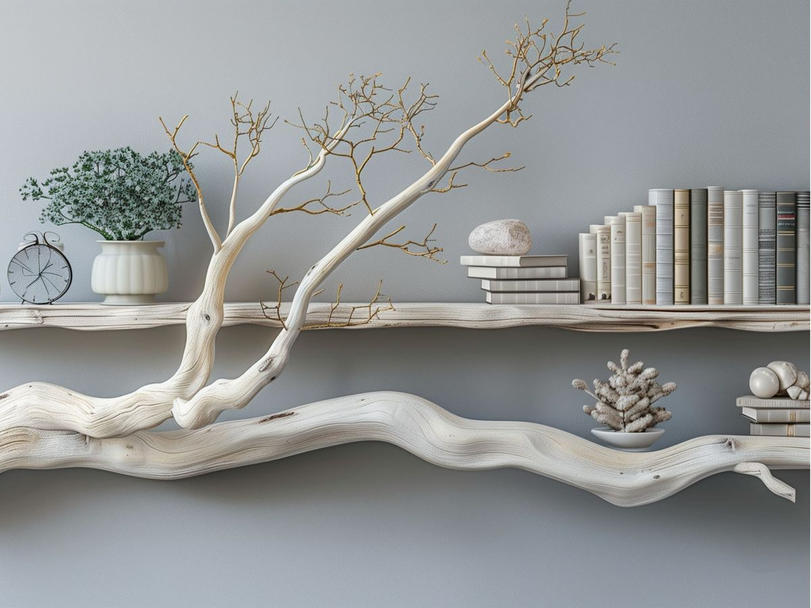

Ketika Kejernihan Terasa Seperti Istirahat
Kebanyakan orang mencari jawaban dengan berpikir lebih keras. Tapi terkadang, keputusan paling jernih datang bukan saat Anda mendorong, melainkan saat Anda akhirnya berhenti.
Baca Ceritanya
Kebanyakan orang mencari jawaban dengan berpikir lebih keras. Tapi terkadang, keputusan paling jernih datang bukan saat Anda mendorong, melainkan saat Anda akhirnya berhenti.
Baca Ceritanya
Banyak orang bergerak terburu-buru karena tidak percaya ritme mereka cukup. Tapi momentum sejati tidak dibangun dari kecepatan, ia tumbuh dari konsistensi ke arah yang benar.
Baca Ceritanya
Menemukan keseimbangan antara perencanaan yang kaku dan alur yang intuitif. Bagaimana kita dapat menciptakan sistem yang mendukung kemanusiaan kita, alih-alih membatasinya...
Baca CeritanyaDi dunia yang serba cepat, memilih untuk bergerak dengan perlahan dan penuh tujuan adalah bentuk radikal dari perawatan diri dan keunggulan profesional...
Baca Ceritanya